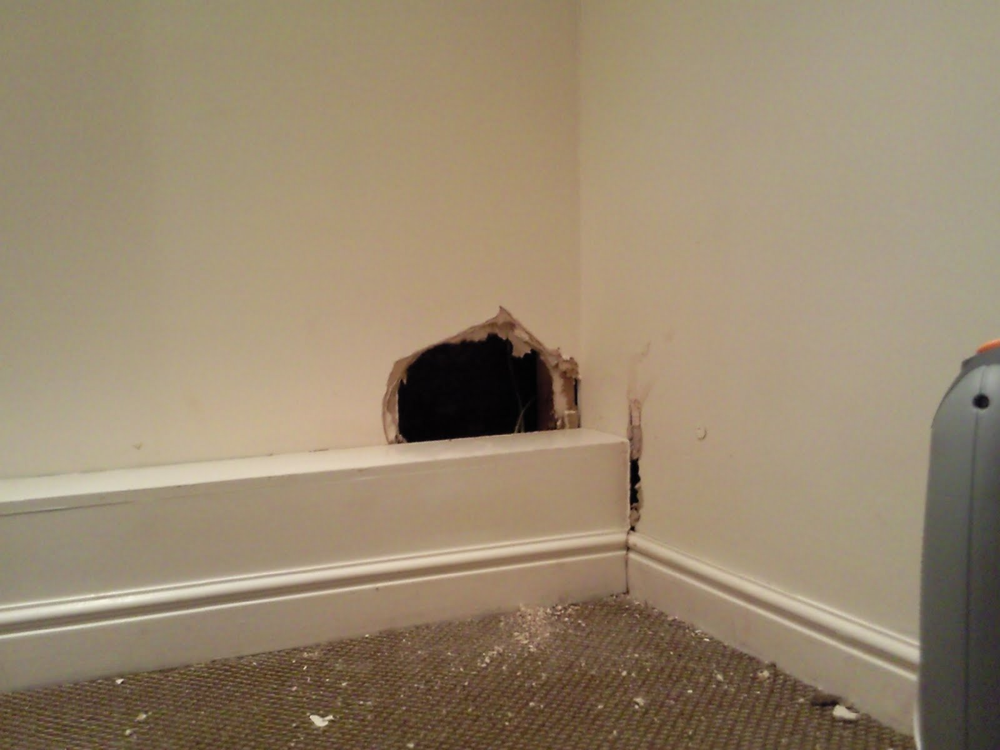

Pourquoi faire appel aux services de PNS pour une dératisation ?
Les rongeurs peuvent représenter un véritable problème pour votre santé ou pour votre business. Dès q'ils parviennent à s’introduire chez vous, ils ne tardent pas à s'approprier les lieux, et commencent à se reproduire très rapidement. Les rats, les mulots, et les souris sont les espèces les plus répandues au Maroc. Ils peuvent causer de lourds dégâts matériels, mais aussi véhiculer un grand nombre de maladies très graves telles que la Leptospirose, le Typhus, la Peste, la Rage, la Tuberculose..... et une multitude d'autres virus très dangereux pour votre santé et celle de vos proches ou collaborateurs.
PNS société de dératisation casablanca Parce que chaque cas est unique, à chaque intervention nous commençons par une inspection approfondie des lieux, (recherche de nids, lieux de passage, source de nourriture, etc.) et ensuite nos techniciens vous proposeront une solution de lutte adaptée qui mettra fin à tous vos tracas.
Notre stratégie de dératisation
Les rongeurs s'installent dans tous les locaux qui réunissent nourriture, humidité et chaleur : administrations et bureaux, réceptions de marchandises, réserves, stands de ventes, salles de repos, cuisines et les divers systèmes de chauffage et de ventilation qui représentent de véritables lieux de prédilection pour les rongeurs.
C'est pour cela que PNS pose des barrages anti-proliférations contre tous types de rongeurs. Nos techniciens examinent les traces de passage, le nombre, la forme, la taille des excréments et leur nature ainsi que l'étendue des dégâts occasionnés. Nous arrivons ainsi à déterminer l'espèce de rongeurs incriminés et la source d'infestation.
La source d'infestation et d'autant plus importante à repérer que les rongeurs ne nichent pas obligatoirement sur les lieux où sont constatés les dégâts.
L'extermination grâce à des appâts très élaborés :
- l'usage de produits spécifiques à chaque espèce de rongeur
- l'appâtage avec des substances chimiques irrésistibles pour tous types de rongeurs
- l'usage de rodenticides contenant des anticoagulants extrêmement puissants qui ne laissent aucune chance de survie à leurs victimes
Mise en place consciencieuse des appâts :
- Déposés en blocs fermés et inaccessibles aux enfants et aux animaux domestiques (chiens, chats, etc.) nos produits ne sont accessibles que par les rongeurs et ont un effet fulgurant sur les rats et les souris. Une méthode propre car les rongeurs meurent dans leur foyer. Sans danger pour votre famille, vos employés ou vos animaux domestiques
- Boites en plastique de haute qualité, inviolables et très résistants
- Nous contrôlons régulièrement nos appâts et procédons à leur remplacement systématique
Éliminer les sources d'alimentation des rongeurs :
Le stockage des denrées alimentaires doit être fait correctement, ne pas déposer la nourriture à même le sol, ou adossée aux murs. Surélevez vos sacs de provisions, nettoyez bien votre cuisine et ne laissez pas s'accumuler vos ordures. Tout en vérifiant qu'il n'y a aucune trace d'humidité dans vos locaux.
Détruire les habitats des rongeurs :
Il faut anéantir tous leurs abris potentiels à proximité, raser court l'herbe tout autour des lieux, ensuite rogner les plantes par le bas pour les garder distantes du sol.
Empêcher les rongeurs de pénétrer :
Verrouiller toutes les portes et fenêtres, boucher les cavités dans les murs et cloisons, et grillager les égouts et autres sorties de canalisations.
Les dangers pour votre entreprise ou votre maison
Les rats et les souris et surtout les surmulots possèdent des dents extrêmement affutées. Ils rongent quasiment tout ce qu'ils trouvent et causent des dégâts considérables :
- Appareils électroménagers, en rongeant les câbles électriques ils peuvent engendrer un court circuit parfois fatale, tel qu'un incendie ou une explosion si un conduit de gaz est affecté.
- Tuyauteries et canalisations, en causant des fuites d'eau souvent difficiles à localiser et réparer si elles sont encastrées.
- Boiseries et meubles en bois sont facilement dégradés
- Matériaux tels que les isolants (laine de verre, ouate) et autres matières friables
- Tissus, vêtements et tapis
- Nourriture et denrées alimentaires peuvent être consommées par les rats, mais surtout deviennent inutilisables du fait de leur souillure par les excréments des rongeurs

Les signes caractéristiques d'une infestation
C’est le soir que les rats, souris et mulots sont les plus actifs, lorsque tout le personnel de votre entreprise quitte les locaux, ou bien lorsque tout le monde est couché dans votre maison, car ils n’aiment pas la présence de l’homme. Cependant, il y a toujours des signes distinctifs de leur présence :
- Ils font du bruit en courant et en rongeant
- Ils laissent des déjections de couleurs noires sur leur passage
- Leurs urines ont une odeur d’ammoniaque qui s’amplifie dans les espaces clos ou pas assez aérés
- Ils font des dégâts matériels à causent de leurs dents qui poussent en continu, il doivent toujours ronger pour se soulager. Le bois, le plastique, les tissus ou même le béton s’effritent sous l’action de leurs dents affutées
- Ils déchictent les emballages des denrées alimentaires et autres sacs de stockage.
- Ils bâtissent leurs nids en lieux relativement chauds et à l’abri des regards, en utilisant des morceaux de tissus, des brindilles ou du papier déchiré
- Lorsqu’ils sont en bon nombre et en bonne forme, ils construisent carrément des terriers dans votre jardin ou dans le cas d’une entreprise, dans les espaces de stockages